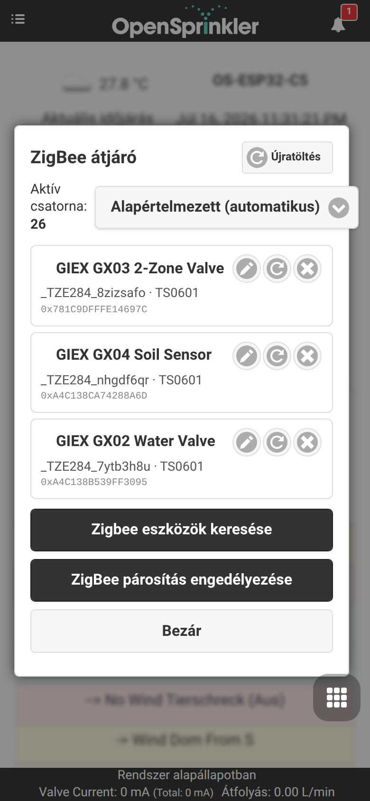
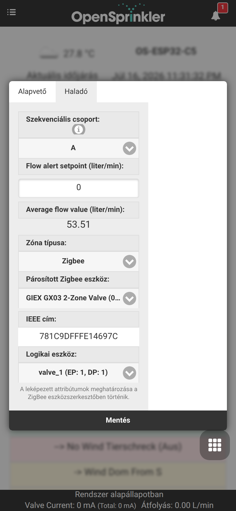

Zigbee átjáró integráció
Az OpenSprinklerPro natív Zigbee-koordinációs képességekkel rendelkezik közvetlenül az ESP32-C5 panelen. Az ESP32-C5 egychipes megoldása támogatja a 2,4 GHz-es kétsávos Wi-Fi 6-ot, a Bluetooth 5-öt (LE) és a 802.15.4-et (Zigbee 3.0 / Thread).
A firmware Zigbee változatával az OpenSprinkler vezérlő teljes értékű Zigbee-koordinátorként működik. Párosítható otthonautomatizálási érzékelőkkel, okos szelepekkel, talajnedvesség-mérőkkel és hőmérséklet-figyelőkkel, hogy az öntözési ütemtervet a valós idejű helyi körülmények alapján igazítsa.
📸 Vezetett beállítási folyamat
Ez a lépésről lépésre útmutató bemutatja, hogyan konfigurálja a rádió üzemmódot, hogyan párosítson Zigbee-eszközöket, és hogyan rendelje azok attribútumait analóg érzékelőkhöz.
1. lépés: A rádió üzemmód konfigurálása
Először ellenőrizze, hogy az ESP32-C5 vezérlő a megfelelő rádió üzemmódra van-e állítva. Alapértelmezés szerint az ESP32-C5 többféle üzemmódban futhat. A üzemmód-beállításokat az oldalsó menü Setup ESP32 Mode pontjában érheti el.

A Zigbee használatához engedélyezze a Zigbee Gateway / Coordinator üzemmódot. Ez inicializálja a natív 802.15.4 rádiót a Zigbee csatornakezeléshez, az eszközök útválasztásához és a hálózat kialakításához.
2. lépés: Eszközök csatlakoztatása és párosítása
Amint a Zigbee üzemmód aktív, az oldalsó menüből elérheti a ZigBee Gateway oldalt. Ezen az oldalon vezérelheti a párosítási ablakot, és kezelheti a regisztrált fizikai eszközöket.

- Kattintson a Permit Join (Csatlakozás engedélyezése, jellemzően 60 másodperc) gombra a hálózat új eszközök számára történő megnyitásához.
- Állítsa a Zigbee-eszközét (pl. GIEX okos szelep, Tuya talajérzékelő vagy Xiaomi hőmérséklet-érzékelő) párosítási módba (általában a párosítógomb 5 másodpercig tartó nyomva tartásával).
- Az eszközt a rendszer felismeri, rövid címet rendel hozzá, és megjeleníti a 64 bites IEEE-címét, az eszköztípust és a kapcsolat minőségét.
3. lépés (opcionális): Külső integrációk
Ez a lépés opcionális, és nem szükséges a Zigbee-állomások vagy -érzékelők működéséhez. Csak akkor nyissa meg a Beállítások szerkesztése → Integrációk (Integrations) menüpontot, ha az adatait külső rendszereknek szeretné továbbítani: érzékelőértékek és szelepállapotok közzététele MQTT-n keresztül, naplózásuk InfluxDB-be, felhőalapú távoli hozzáférés engedélyezése az OpenThings Cloud (OTC) segítségével, vagy e-mail / IFTTT értesítések küldése vezérlőeseményekről.

4. lépés: Több érzékelő és a kalibráció konfigurálása
Az érzékelőadatok programkorrekciókhoz való felhasználásához nyissa meg az Analóg érzékelők (Analog Sensor Configuration) oldalt a lábléc menüből. Ez az áttekintés megjeleníti az összes aktív logikai érzékelőt, azok fizikai kötéseit és az akkumulátor állapotát.

5. lépés: Zigbee érzékelő hozzáadása/szerkesztése
Kattintson az Érzékelő hozzáadása (Add Sensor) gombra (vagy szerkesszen egy meglévőt), hogy egy adott Zigbee-eszközattribútumot (például talajnedvesség százalékát vagy hőmérsékletet) egy analóg érzékelőhelyhez rendeljen.

Ebben a szerkesztőben: - Adhat az érzékelőnek egy könnyen felismerhető Nevet. - Kiválaszthatja az Érzékelő típusát (pl. nedvesség, hőmérséklet, akkumulátor stb.). - Kiválaszthatja a Forráseszközt (Source Device) a párosított Zigbee-csomópontok legördülő listájából. - Egyedi kalibrációs eltolásokat és küszöbérték-kioldókat határozhat meg.
💧 GIEX okos szelepek és zónavezérlés
Az érzékelők kiolvasásán túl az OpenSprinklerPro képes elemmel működő GIEX Zigbee-szelepeket közvetlenül öntözőzónaként (állomásként) vezérelni. Minden szelepkimenet egy állomáshoz van rendelve, amelyet a vezérlő vezeték nélkül nyit és zár — nincs szükség 24 V-os vezetékezésre, mágnesszelepekre vagy szelepaknákra.
Mitől különlegesek ezek a szelepek
- Vezeték nélküli és elemmel működő – a szelep belső elemekről működik és Zigbee-n keresztül kommunikál, így egy zóna a koordinátor hatótávolságán belül bárhová elhelyezhető.
- Tuya okosszelep-platform – a GIEX-szelepek Tuya-adatpontokként (DP) teszik elérhetővé funkcióikat: be/ki vezérlés, visszaszámláló időzítő, ciklikus vagy időtartam-alapú öntözés, és a mérővel felszerelt modelleknél átfolyás- és mennyiség-telemetria.
- Több zóna egyetlen eszközben – egyetlen fizikai GX03 két teljesen független kimenetet biztosít, így egyetlen párosított eszköz két különálló OpenSprinkler-zónát ad.
- Akkumulátor-jelentés – a fennmaradó töltöttségi százalék közvetlenül az állomás kártyáján jelenik meg az irányítópulton.
A GIEX termékcsalád
| Modell | Típus | Kimenetek / logikai eszközök | Tipikus felhasználás |
|---|---|---|---|
| GX02 | Egyszelepes okos vízszelep | 1 szelep (valve_1, DP 1) |
Egy vezeték nélküli öntözőzóna |
| GX03 | 2 zónás okos vízszelep | 2 szelep (valve_1 = DP 1, valve_2 = DP 2) |
Két független vezeték nélküli zóna egyetlen eszközből |
| GX04 | Talajnedvesség- és hőmérséklet-érzékelő | Talajnedvesség + hőmérséklet | Nedvesség-alapú programkorrekciók (analóg érzékelőként használva, lásd a fenti 5. lépést) |
Párosítás után mindezek az eszközök együtt jelennek meg a ZigBee Gateway oldalon a felhasználóbarát nevükkel, gyártójukkal/modelljükkel és 64 bites IEEE-címükkel:

Hogyan működnek együtt az OpenSprinklerrel
Amikor egy szelepet Zigbee-állomásként használnak, a vezérlő Zigbee-koordinátorként működik, és minden állomásfutást egy be/ki (vagy Tuya DP) paranccsá alakít, amelyet a megfelelő szelepkimenetre küld:
- Egy párosított eszközt a 64 bites IEEE-címe azonosít.
- Egy logikai eszköz kiválasztja az adott eszközön belüli egyedi kimenetet — pl.
valve_1 (EP: 1, DP: 1)vagyvalve_2 (EP: 1, DP: 2)egy GX03 két zónájához. - Az állomás indítása megnyitja a szelepet; a futásidő, a programütemezések, a szekvenciális csoportok, az eső-/érzékelő-késleltetések és a kézi vezérlés pontosan úgy viselkednek, mint egy vezetékes zónánál.
Ez eltér az 5. lépésbeli érzékelő-hozzárendeléstől: az érzékelő adatokat olvas a programkorrekciókhoz, míg egy Zigbee-állomás aktívan vezérel egy szelepet.
GIEX-szelep beállítása zónaként
- Párosítsa a szelepet a ZigBee Gateway oldalon (lásd a fenti 2. lépést). A GIEX-eszköz a felhasználóbarát nevével és IEEE-címével jelenik meg.
- Az irányítópulton nyissa meg az állomás beállításait (a zónakártyán lévő fogaskerék ikon), és váltson a Speciális (Advanced) fülre.
- Állítsa az Állomás típusát (Station Type) Zigbee értékre.
- Válassza ki a párosított Zigbee-eszközt (pl. GIEX GX03 2-Zone Valve). Az IEEE-cím automatikusan kitöltődik.
- Válassza ki a logikai eszközt ahhoz a kimenethez, amelyet ennek az állomásnak vezérelnie kell —
valve_1az első zónához,valve_2a másodikhoz.

- Nyomja meg a Küldés (Submit) gombot. Az állomás mostantól minden futáskor vezeték nélkül nyitja és zárja a kiválasztott GIEX-szelepkimenetet.
Kétzónás GX03 esetén ismételje meg a lépéseket egy második állomásnál, és válassza a valve_2-t, hogy mindkét kimenet függetlenül vezérelhető legyen.
Platform elérhetőség
A Zigbee-állomások és a GIEX-zónafunkció a Zigbee firmware-változatot futtató ESP32-C5 vezérlőt igénylik. ESP8266- vagy OSPi-változatokon nem érhetők el.
🛠️ Támogatott eszközök és technikai részletek
A belső firmware támogatja a szabványos Zigbee 3.0 clustereket: - 0x0402: Hőmérséklet-mérés (Tuya, Xiaomi, Sonoff) - 0x0405: Relatív páratartalom / talajnedvesség (GIEX, Tuya, Moes) - 0x0001: Tápellátás-konfiguráció (akkumulátor-százalék jelentése)
Többcsatornás eszközök leképezése
Összetett, többcsatornás okos szelepek (mint a GIEX GX02 kétkimenetes öntözőszelep) használatakor a koordinátor az egyes szelepállapotokat és telemetriacsatornákat külön logikai aleszközökre bontja. Ez biztosítja, hogy minden zóna függetlenül indítható vagy skálázható legyen.
Rádió-együttélés (Coexistence)
Az ESP32-C5 egyszerre kezeli a BLE-vizsgálatokat, a Wi-Fi 6 forgalmat és a Zigbee 802.15.4 csomagokat. A BLE-érzékelővizsgálatok során a Zigbee Packet Traffic Arbitration (PTA) protokoll pillanatnyilag csökkenti a Zigbee-végpontok prioritását a rádiós ütközések és a csomagvesztés elkerülése érdekében, majd azonnal visszaállítja a teljes prioritást, amint az aktív vizsgálat szünetel.